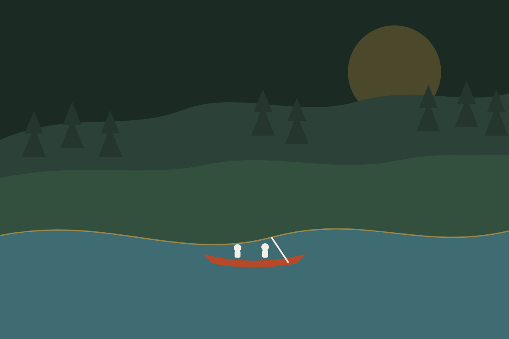
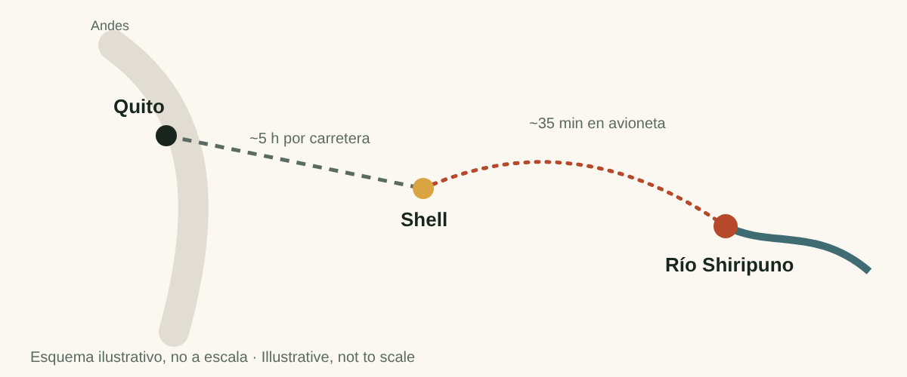
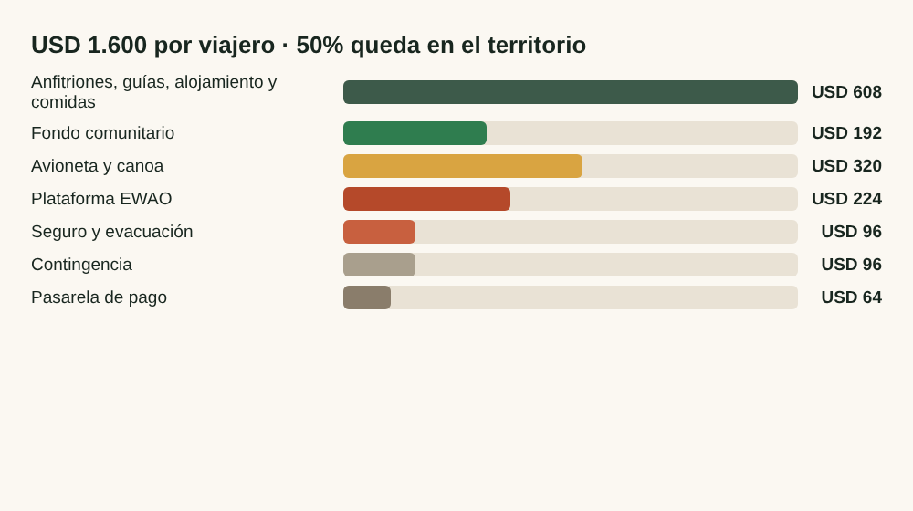

01
Día 1 · De Shell al río Shiripuno
Avioneta de unos 35 minutos y canoa. Bienvenida de los anfitriones y lectura del protocolo de visita.
Cinco días con anfitriones Waorani. Grupos de máximo 8 viajeros. Las rutas, los cupos y las fechas los decide la comunidad.

Avioneta de unos 35 minutos y canoa. Bienvenida de los anfitriones y lectura del protocolo de visita.
Caminata para conocer plantas, rastros y el uso del territorio, en lo que la comunidad decide compartir.
Canoa y observación de aves. Por la tarde, taller con artesanas de WEMA, con pago directo a ellas.
Preparación de alimentos y tejido de chambira. Por la noche, relatos, sin grabar salvo permiso.
Canoa y vuelo de vuelta. Encuesta de experiencia y Pasaporte del Invitado.

USD 1.600 por persona, todo incluido desde Shell. Depósito del 30% para reservar; el saldo se paga 45 días antes. Fechas propuestas, sujetas al calendario aprobado por la Asociación Keweriono.
Anfitriones, guías, alojamiento y comidas: USD 608 · Fondo comunitario: USD 192 · Avioneta y canoa: USD 320 · Plataforma EWAO: USD 224 · Seguro y evacuación: USD 96 · Contingencia: USD 96 · Pasarela de pago: USD 64. Estructura propuesta, en validación con la comunidad.

EE.UU. mantiene a Ecuador en Nivel 2 (aviso del 18 de agosto de 2026); Pastaza y Orellana no están en los niveles 3 ni 4. Revisamos el aviso antes de cada salida y reprogramamos sin costo si cambia.
Quito → Shell por carretera (unas 5 horas) → avioneta al río Shiripuno (unos 35 minutos, incluida) → canoa hasta la comunidad.
Consulta a un médico de viajes. Para la Amazonía de Ecuador se recomienda la vacuna contra la fiebre amarilla.
Tarifa neta con 15% de comisión, bloqueo de cupos y estancias universitarias de 7 a 10 días. Descarga la ficha técnica con condiciones y protocolo.